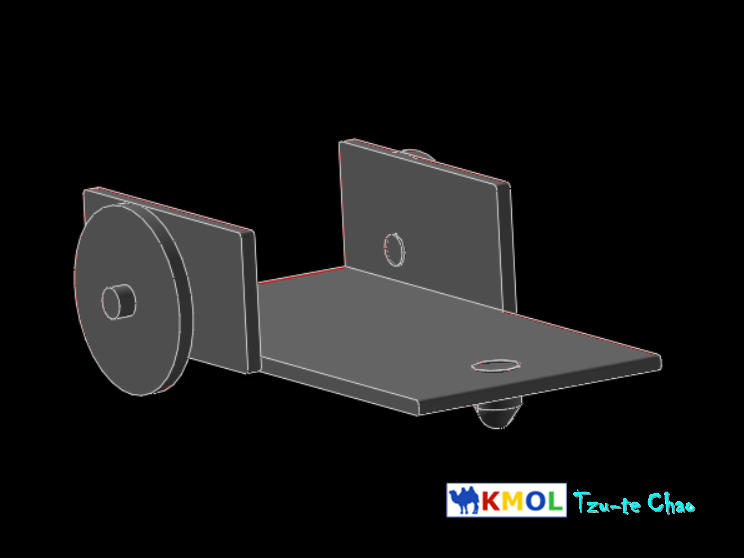

week2-5 <<
Previous Next >> Week-6
week6-9
Week-6
任務
1.機械設計工程系-電腦輔助設計實習 W6 任務一參數化零組件繪製
模型:

2.機械設計工程系-電腦輔助設計實習 W6 任務一網際 V-rep 模型控制
1.先將 V-rep 3.6.1 rev 4.7z V-rep 3.6.1 rev 4.7z及模型web_vrep2.zip (local)下載完成.
2.我們可以透過v-rep將solvespace的模組進行動態測試.
3.並透過python控制v-rep，所以我們先把solvespace繪製的模型導入到v-rep.
4.再執行python程式去做API控制，並執行網頁，控制拖車的前後左右的方向.
3.機械設計工程系-電腦輔助設計實習 W6 任務一新增啟動與停止按鈕
1.開啟E:\web_vrep2\templates中的contrils.html，複製一行按鈕指令當作修改內容，把up改成start及stop.
2.開啟E:\web_vrep2中的vrep_linefollower.py，新增啟動與停止的指令程式碼，完成後即可操作啟動與停止鈕.(先開V-REP3V-REP3再啟動程式，不然會沒反應)
Week-7
week8
1.啟用 CMSiMDE中的網誌系統
1.打開leo edit
2.用leo edit將config中的pelican.leo做編輯
3.將近端跑完的指令輸入到倉儲下執行
4.完成
2.導入 Webots
1.下載Webot 2019a.7z
2.複製start_mdecourse.bat並更名start_mdecourse -webot.bat
3.將指令貼上
4.按stop,開啟start_mdecourse -webot.bat
5.完成
3.以ssh對Github 連線
1.將E:\201906_fall\data\portablegit\bin中的sh_for_solvespace_compile複製並更名為sh.exe
2.進入黑窗輸入ssh-keygen -t rsa -b 4096 -C "使用者學號"
3.下載putty並透過putty.chm新增兩枚鑰使
4.修改start.bat:
set GIT_HOME=%Disk%:\portablegit\bin\
set GIT_SSH=%Disk%:\putty\plink.exe
5.修改自身倉儲 .git 中的 config 檔案中的 url 設定
url = git@github.com:mdecourse/cad2019.git
6.設定putty
7.在Y:\home_mdecourse\.ssh中新增config並加入指令
ProxyCommand y:/putty/plink.exe github.com %h %p
Host github.com
User git
Port 22
Hostname github.com
TCPKeepAlive yes
IdentitiesOnly yes
8.在githun ssh設定中新增鑰使
9.完成
week9
期中影片:
week2-5 <<
Previous Next >> Week-6